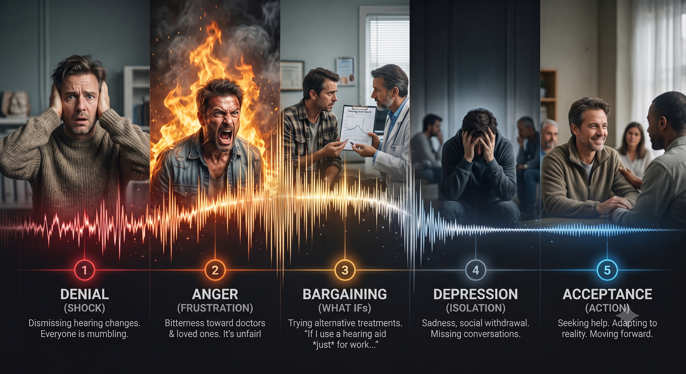

Hearing loss isn't just about what you can't hear; it’s about losing connection, spontaneity, and confidence. It is a form of grief, and like any grief, you don't just 'get over' it. You must work through the stages to find a new path forward.
Impactful Quote: "My hearing isn't that bad. It's just other people speak softly, or I’m tired."
The Experience: The initial response. Dismissing complaints from others, attributing communication difficulty to background noise ("Everyone is mumbling," "It’s too loud in here"), avoiding hearing tests, and rationalizing that it is a minor or temporary problem.
Impactful Quote: "Why should I pay thousands of pounds for hearing aids? They are ugly and the doctors don't care. It’s unfair."
The Experience: Frustration and blame. Lashing out at doctors, audiologists, or loved ones. Expressing bitterness about being 'different' or 'defective.' Resenting the cost of technology or the perceived stigma. A sense of 'Why is this happening to me?'
Impactful Quote: "I’ll only wear the hearing aid at work. If I don't use headphones, maybe my hearing will get better."
The Experience: Negotiating and 'What Ifs'. Attempting deals with oneself or a higher power. Trying obscure alternative therapies (supplements, 'cures'), or deciding to wear a hearing aid only for work or important events, but refusing it socially. Dwelling on 'What if I hadn't...'
Impactful Quote: "I can't connect. Everyone’s conversations are a distant fog. Why should I even go out?"
The Experience: Powerlessness, deep sadness, and loneliness. Anxiety about social interaction leads to withdrawal and isolation from conversations and loved ones.
Impactful Quote: "I have hearing loss. It is part of my life, but I still have connections to make."
The Experience: Realizing hearing loss is reality, without judgment or stigma. Actively researching technology, committing to therapy, and moving from passive victim to proactive participant in communication.
If you are struggling with emotional isolation, anxiety, or grief linked to hearing loss, you are not alone. Bristol offers dedicated local services and practical advice tailored for you:
Free NHS mental health support, 1-to-1 counselling, and CBT for anxiety and low mood. You can self-refer directly online without needing a GP appointment.
Visit Vita Health Bristol ↗Independent local mental health charity offering free telephone listening services, emotional support, and accessible advocacy across Bristol.
Visit Bristol Mind ↗Specialist NHS Hearing Therapists help with hearing loss counselling, tinnitus distress, and adjustment techniques. Ask your Bristol GP or NHS Audiology team for a referral.
View Hearing Therapist Guide →Our community support group meets regularly across Bristol. Connect with fellow initiates in a welcoming, accessible environment to share advice, technology tips, and real-world encouragement.
Join Bristol Hearing Loss Support Group →
• NHS Mental Health Crisis Line: Call 111 (select Option 2) for immediate NHS support in Bristol.
• Samaritans: Call 116 123 (Free 24/7 listening service).
• Shout Crisis Text Line: Text SHOUT to 85258 for 24/7 free text support.